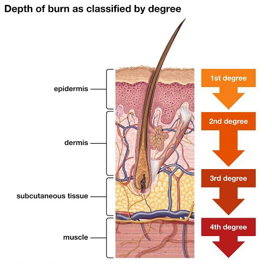
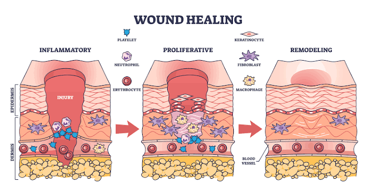

Understanding the pathophysiology of thermal trauma and chronic ulceration is fundamental to implementing effective skin grafting techniques. Normal human skin is anatomically stratified into three primary layers: the epidermis (the outermost waterproof barrier), the dermis (containing connective tissue, hair follicles, and sweat glands), and the deeper subcutaneous hypodermis (composed of adipose and connective tissue).
When a thermal injury occurs, tissue damage is not uniform. According to Jackson's Burn Wound Model, a severe burn is divided into distinct anatomical zones representing varying degrees of necrosis and ischemia. The Zone of Coagulation represents the point of maximum damage where irreversible tissue necrosis occurs. Surrounding this is the Zone of Stasis, characterized by decreased tissue perfusion, which is potentially salvageable with rapid clinical intervention.
The depth of these zones heavily dictates the physiological response and the required medical approach. As illustrated in Fig i, the classification of burn injuries corresponds directly to how deeply the thermal trauma penetrates these anatomical layers. Superficial burns may only damage the epidermis, while severe third and fourth-degree burns obliterate the dermis, destroying vital vascular networks, nerve endings, and hair follicles, making natural regeneration impossible.
Without an intact dermal matrix, the body cannot self-regenerate the tissue. This physiological deficit underscores the absolute necessity for advanced skin grafting techniques, scaffolds, and bioengineered tissues to bridge the gap in regenerative wound care.
Conversely, chronic wounds—such as pressure sores and diabetic ulcers—exhibit a vastly different pathological mechanism. Rather than acute thermal destruction, these wounds suffer from systemic hypoxia, cellular senescence, and an imbalance of matrix metalloproteinases (MMPs) which aggressively degrade the extracellular matrix.

As seen in Fig ii, normal wound healing progresses through inflammatory, proliferative, and remodeling phases. Chronic wounds become trapped in an endless inflammatory loop, completely inhibiting natural epithelialization. Because the severity of tissue damage dictates whether a wound can heal naturally or if surgical grafting is required, accurate clinical assessment is critical. The following table summarizes the physiological classification of skin injuries and the standard recommended therapeutic interventions.
| Classification Depth | Anatomical Involvement | Clinical Presentation | Recommended Treatment |
|---|---|---|---|
|
First-Degree (Superficial) |
Epidermis only. | Erythema (redness), dry, painful. No blister formation. | Topical moisturizers. Heals in 3–7 days. No grafting required. |
|
Second-Degree (Partial-Thickness) |
Epidermis and upper/deep dermis. | Blisters, extremely painful, moist, weeping surface. | Antimicrobial dressings. Deep cases require skin grafting. |
|
Third-Degree (Full-Thickness) |
Total destruction of epidermis and entire dermis. | Leathery, dry, pearly white. Painless due to nerve damage. | Surgical excision. Autografting or substitutes are mandatory. |
| Fourth-Degree | Extends into fat, muscle, or bone. | Black, charred, deeply necrotic tissue. Hard and rigid. | Complex reconstructive flaps. Advanced tissue engineering. |